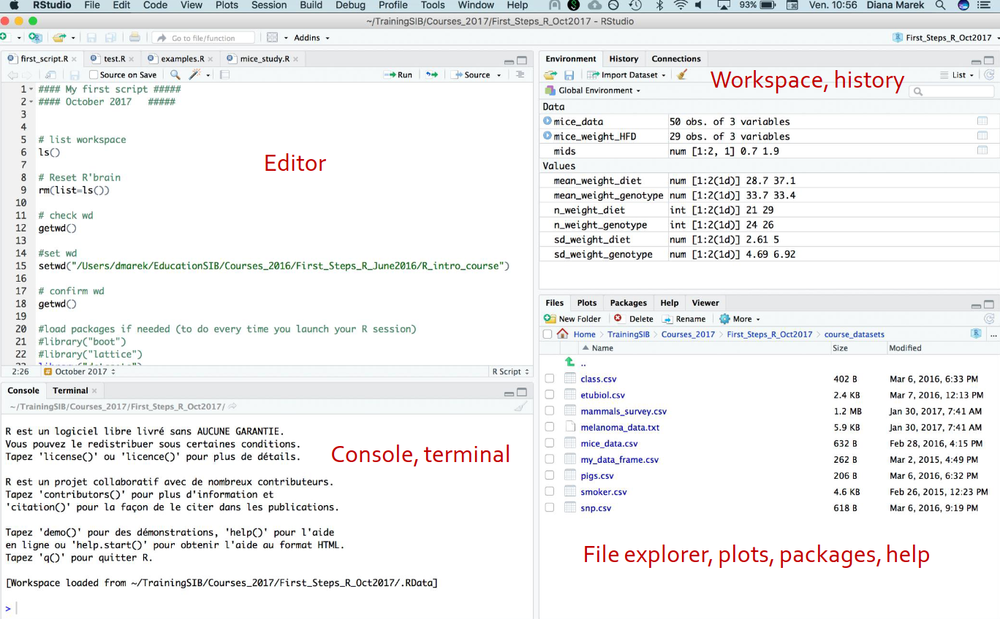
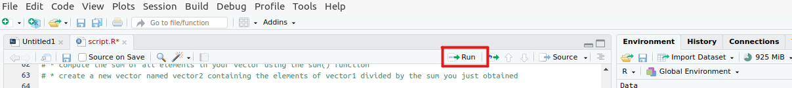

R crash course
The goal of this crash-course is to get you acquainted with all the basic concepts and syntax of the R programming language.
Mastering R is not something done in a single day, and so the goal is not to make you into R guru’s, but to give you enough groundings so that, armed with a good cheatsheet and with a bit of patience, you should be able to understand what happens in the R codes used when conducting a differential expression or enrichment analysis.
This crash course can be followed along either on a distant Rstudio server (the teacher will tell you how to connect there), or on your own machine.
Warning
If you choose to follow along on your own machine, please download and install Rstudio before the course.
You will learn to :
- recognize the basic R elements (variables, functions, arguments,…)
- read data from csv/tsv files into R
- perform basic mathematical and statistical computations with R functions
- represent your data in (beautiful) plots
So, start your Rstudio (or connect to the Rstudio server), and let’s dive into R.
meet Rstudio
Once you have opened Rstudio you should see something a bit like this:

Except in your case:
- the Editor (upper-left) will be absent (because you have not opened a file yet)
- the Environment (upper-right) will be empty
Anyhow, the 4 panels respecttively let you access:
- upper-left : Editor - see and edit file (mostly scripts)
- lower-left : Console - things typed there will be interpreted as code (after you hit the Enter key)
- Console : for R code
- Terminal : for UNIX command lines
- upper-right : Environment/History - you can review which variable exists at the moment and which commands you executed before there
- lower-right :
- Files - to see, navigate, and interact with your files
- Plots - to show the plots you will create
- Help - to display the help pages when you ask for them
Get the data
- Download the data above
- Move the data where you want to conduct the practicals (if you are on the server, follow the teacher’s intructions)
- unzip the data (otherwise you will not be able to access it)
The basics : operators, variables, functions, vectors
You can start typing some R code directly in the Console, and after you hit enter it will be interpreted as R code.
Some command will display a result, and other won’t (but they may have another effect like creating a new variable, or changing a variable’s content)
For example, typing:
5+7
gives:
[1] 12
whereas :
x <- 128.5
x is now in your environment.
Variable
Variables are generally containers for data. It can be simple data, like a single number, or more complex like a table or a set of DE results.
- variables are created when we assign them a value, either with the symbol
<-or= -
variables are identified by their name, which:
- cannot start with a number
- can contain the
.or_special characters
-
you can see the value of a variable by calling it’s name in the console
- variables values can be changed with assignment too
- deleting a variable is possible, but not so common
Note
the assignment is always from right to left:
x = 9OK9 = xNOT OK
Try it out:
x <- 128.5
x
y = -12
y
my.var2 = 160
my.var2
As we have seen we can use operators to perform simple operations
+: addition-: subtraction*: multiplication/: division^: power(): parenthesis work exactly as in math
You can use variables and numbers together.
x / y
z = x^2 / (y + 5)
z
Note
the code above will work only when the variable contain numerical values. If they contain something else (like text for instance), then you will likely get an error.
Function
Functions are bits of code packaged for easy use.
Like variables, they have a name (actually, they are variables), and they can be called, meaning that we execute the code in the function, with the syntax
function_name( ... arguments ... )
Arguments are variables that we give to the function to modify their behavior.
Each function has their own arguments, sometimes none, often several, some mandatory, and some facultative.
# BTW if you start a line with a # then it is a "comment": not interpreted by R as code
# function that takes no argument:
getwd()
# function that takes 1 argument:
abs(-11)
abs(x)
log(x)
# when there is more than 1 argument they are separated by comma
min( x , y )
# some arguments are facultative and can be declared by name
log( x )
log( x , base = 2 )
You don’t have to guess which argument a function expect: use ?function_name to look up its documentation.
?sqrt
Vectors
Variables can contain any sort of data (or functions), and one of the most common is the vector, which is a list of elements of the same type (numbers, text, … more on that later).
y <- c( 12 , 15 , 137 , 4 )
y
You can do operation and call functions with numbers seamlessly:
y + 10
log(y)
log(y) + x^2
# many function actually expect a vector as argument
mean(y)
median(y)
A single element of a vector can be accessed with []:
y[1] # 1st element
y[3] # 3rd element
y[100] # 100th element -> does not exist -> you get NA = Not Acquired
A vector type determine its behavior.
You can learn it with the class function:
class(y)
a = c('conditionA',"conditionB") # character vector; NB: ' ' or " " are both valid
class(a)
b = c(TRUE,FALSE,TRUE,TRUE) # boolean vector ; NB: all character needs to be UPPERCASE here
class(b)
We will mostly play with numeric vectors, but it is important to know about the rest.
If you try to apply a function for numeric to a character vector you may get an error.
log(a)
Error in log(a) : non-numeric argument to mathematical function
Whenever you encounter an error, take to time to read it as it is often informative.
Exercise - variables, vectors and functions
- create a vector named vector1 containing the numbers 2984, 4682, 1932 ,45 ,12,135
- compute the sum of all elements in your vector using the
sum()function - create a new vector named vector2 containing the elements of vector1 divided by the sum you just obtained
Solution
vector1 = c( 2984, 4682, 1932 ,45 ,12,135 )
vector1.sum = sum( vector1 )
vector1.sum
vector2 = vector1 / vector1.sum
vector2
Reading and manipulating tabular data
Working directory
This is when things become a bit more complex.
You code is executing from someplace in your computer (often by default it will be your “home” directory), we call this the working directory.
Use getwd() to learn what it is:
getwd()
[1] "/home/wandrille"
Then imagine you have a csv file named iris.csv, somewhere in the computer.
If it is in the same folder as my working directory, then I can read the file directly my something like
read.csv("iris.csv")
Otherwise if it is let’s say in /home/wandrille/R_crash_course_data/.
You can see that the beginning here is the same, so, relative to my working directory the file is in subfolder R_crash_course_data/.
Then we need to use:
read.csv("R_crash_course_data/iris.csv")
If you have made a typo in the file name or pointed to the wrong folder, you will get an error like:
Error in file(file, "rt") : cannot open the connection
In addition: Warning message:
In file(file, "rt") :
cannot open file 'iris.csv': No such file or directory
Which is a very common error.
Basic reading and manipulating
You can read a simple csv file, with a header line to give column names, with the command:
read.csv("R_crash_course_data/iris.csv")
But this prints the file content on the screen, what you usually want is to store it in a variable:
iris = read.csv('iris.csv')
iris
iris is an object of class data.frame, whic contains tabular data.
A data frame is like a collection of vectors, where each vector forms a column; they are a very common variable type for any form of tabular data.
# show the first few lines of the data frame
head( iris )
# show the size of the data frame
dim( iris )
# show the column names of the data frame
names( iris )
We can access columns individually:
## access a single column, the result is a vector
iris$Sepal.Length
## access a single column, but the result is a data frame with 1 column
iris['Sepal.Length']
We can apply the functions we have seen before to individual columns, as well as several more which can be applied to the whole dataframe at once.
mean( iris$Sepal.Length )
summary( iris$Sepal.Length )
summary(iris)
Species, which is a character vector and does not have a very useful summary.
This can sometimes cause further problems, for instance:
colMeans(iris)
Error in colMeans(iris) : 'x' must be numeric
This can be resolved by making a copy of the data frame with the numeric columns only
iris_numerical = iris[ , c( "Sepal.Length", "Sepal.Width", "Petal.Length", "Petal.Width" ) ]
iris_numerical
colMeans(iris_numerical)
rowMeans(iris_numerical)
As we are starting to accumulate a lot of code, it would be a good moment to start a script.
A script is simply a text file containing R commands.
To create one, use Ctrl+Alt+Shift+N, or go to Flie > New File > R script.
This will open a new file on the top-left section of Rstudio, where you can write some code.
Important reminder
remember to save your file, and to save often
The code you write in the script can be send to the console using Ctrl+Enter or clicking on the run button:

Exercise - basic reading and manipulating
- read the csv file “diamonds.csv” in a dataframe
- what are the name of the columns of this dataframe?
- use the median function to compute the median carat in this data (
caratcolumn) - use summary to get the minimum and maximum price
Solution
diamonds = read.csv('diamonds.csv')
colnames(diamonds)
median( diamonds$carat )
summary( diamonds$price )
More on reading files
When the file you want to read in the in the current working directory you have to specify to R where it can find the file:
diamonds = read.csv('data/diamonds.csv')
Some files are not in csv format:
diamonds = read.csv('data/diamonds.tsv')
head( diamonds )
carat.cut.color.clarity.depth.table.price.x.y.z
1 0.23\tIdeal\tE\tSI2\t61.5\t55\t326\t3.95\t3.98\t2.43
2 0.21\tPremium\tE\tSI1\t59.8\t61\t326\t3.89\t3.84\t2.31
3 0.23\tGood\tE\tVS1\t56.9\t65\t327\t4.05\t4.07\t2.31
4 0.29\tPremium\tI\tVS2\t62.4\t58\t334\t4.2\t4.23\t2.63
5 0.31\tGood\tJ\tSI2\t63.3\t58\t335\t4.34\t4.35\t2.75
6 0.24\tVery Good\tJ\tVVS2\t62.8\t57\t336\t3.94\t3.96\t2.48
Then, we need to use an appropriate function.
# read.table is a very modular function to read most tables in a text file
diamonds = read.table('data/diamonds.tsv')
head(diamonds)
V1 V2 V3 V4 V5 V6 V7 V8 V9 V10
1 carat cut color clarity depth table price x y z
2 0.23 Ideal E SI2 61.5 55 326 3.95 3.98 2.43
3 0.21 Premium E SI1 59.8 61 326 3.89 3.84 2.31
4 0.23 Good E VS1 56.9 65 327 4.05 4.07 2.31
5 0.29 Premium I VS2 62.4 58 334 4.2 4.23 2.63
6 0.31 Good J SI2 63.3 58 335 4.34 4.35 2.75
# by default, read.table does not treat the first line as a header
# we set the argument header to TRUE to change this behavior
diamonds = read.table('data/diamonds.tsv' , header = TRUE)
head(diamonds)
carat cut color clarity depth table price x y z
1 0.23 Ideal E SI2 61.5 55 326 3.95 3.98 2.43
2 0.21 Premium E SI1 59.8 61 326 3.89 3.84 2.31
3 0.23 Good E VS1 56.9 65 327 4.05 4.07 2.31
4 0.29 Premium I VS2 62.4 58 334 4.20 4.23 2.63
5 0.31 Good J SI2 63.3 58 335 4.34 4.35 2.75
6 0.24 Very Good J VVS2 62.8 57 336 3.94 3.96 2.48
You can learn more in the documentation of read.table
?read.table
Arguably, the main arguments are:
sep: separator between fieldsheader: does the first line contain column names?row.names: set to 1 to have the first column interpreted as row names. Useful when reading expression matrices.
Selection
Some columns contain text data (character)
iris$Species
We can get a “summary” with the table function:
table( iris$Species )
We can use a comparison operator to test conditions on data. These comparisons are the basis for selecting parts of our data.
The main comparison operators are:
==: tests equality<or>: under or above<=: under or equal>=: above or equal
5 > 10
FALSE
In practise, here is what we do:
iris$Species == 'setosa'
iris$Petal.Length > 5
Both of these commands give a vector of booleans values (FALSE/TRUE).
These vector can be given to the [] operator which will select the elements which are TRUE.
iris$Species[ iris$Species == 'setosa' ]
Petal lengths of the Iris setosa samples:
iris$Petal.Length[ iris$Species == 'setosa' ]
We can do the same for data frames.
Because data frames are 2D tables (with rows and columns), the syntaxt is a bit different:
dataframe[ selected_rows , selected_columns ]
If selected rows or columns is left empty, then all elements are selected.
iris[ iris$Species == 'setosa' , ]
iris[ iris$Species == 'setosa' , 'Petal.Length' ]
With this, we can use these selection to make further computations, such as computing the mean petal length for different species:
mean( iris[ iris$Species == 'setosa' , 'Petal.Length' ] )
mean( iris[ iris$Species == 'virginica' , 'Petal.Length' ] )
Finally, in some case we want to combine some filters. This can be done with :
&: and - select elements that satisfy both filters|: or - select elements that satisfy either of the two filters
# iris of the setosa species AND with a petal length above 1.5
iris[ iris$Species == 'setosa' & iris$Petal.Length>1.5 , ]
Exercise - Selection
- read the csv file “DEresults.csv” in a dataframe
- how many elements have a significant adjusted p-value (column
padj)? - how many elements have an absolute value of
log2FoldChange > 1? - how many elements have a significant adjusted p-value (column
padj) and a positivelog2FoldChange?
Solution
# 1. reading the file
df = read.csv( 'DEresults.csv' )
# 2. selecting significant adjusted p-value
table( df$padj < 0.05 )
# 3. selecting absolute values of log2 Fold-Change above 1
table( abs( df$log2FoldChange ) > 1 )
# OR alternatively
table( df$log2FoldChange > 1 | df$log2FoldChange < -1 )
# 4. significant adjusted p-value and positive log2 Fold-Change
table( df$log2FoldChange > 0 & df$padj < 0.05 )
# OR alternatively we can get a two by two table
table( df$padj < 0.05 , df$log2FoldChange > 0 )
Writing data frame to files
Let’s create a new data frame from the Iris virginica only :
virginica_iris = iris[ iris$Species == 'virginica' , ]
head( virginica_iris )
Then we write it with write.csv:
write.csv( virginica_iris , 'virginica.csv' , row.names = FALSE )
write.table exists as well, and generally they have the same arguments as read.csv and read.table.
Creating new columns
By dividing the sepal width by the sepal height, we get a ratio for each sample:
iris$Sepal.Width / iris$Sepal.Height
We can set it as a new column in the data frame simple by doing an assignment to a column:
iris$ratio = iris$Sepal.Length / iris$Sepal.Width
head( iris )
plotting with ggplot2
There exists several ways of creating plots in R, but arguably the most common is the ggplot2 library.
detour: libraries
A library is a set of external functions, variables, … which have been packaged together.
Because there are thousands of these libraries, they are not installed by default when you first install R, and they are not loaded in your R session.
So to use them you need to :
- ensure they are installed (you need to install them only once)
- load them in your session (you need to do this for each R session you start)
installing a library
Note
The Rstudio instance on the server should have all the libraries you will need already installed, so there is no need for you to perform these installations there.
For our purpose R libraries can be found in two main repositories:
* CRAN : generalist repository
* install with install.packages("package_name")
* Bioconductor : specialised in bioinformatics libraries
* install with BiocManager::install("package_name")
* BiocManager itself may need to be installed from CRAN with install.packages("BiocManager")
In RNAseq analysis yt is common to mix libraries from both sources ( our package for plotting or doing a PCA comes from CRAN, and our package that retrieves genome annotation is from Bioconductor).
Note
note the quotes around the library name when calling install.packages or BiocManager::install
loading a library
Irrespective of the repository the library came from, once it is installed in your R session you can load it with :
#loading ggplot2
library(ggplot2)
Note
note the absence of quotes around the library name when calling library
First steps in ggplot2
We want to represent the relationship between petal length and petal width.
The basic call to ggplot2 is made with the ggplot function, which typically takes to arguments:
- a dataframe containing the data we want to represent
- an aesthetic : a call to the
aesfunction defines which elements of the data we want to map to graphical elements (x-axis, y-axis, color, …)
ggplot( iris , aes( x = Petal.Length , y = Petal.Width) )
At this stage, we have a graphical window, with axes defines and all, but we need to add graphical element on top of it.
This is done by saving the plot in a variable, and then adding (with +) the results of ggplot2 functions to it.
p = ggplot( iris , aes( x = Petal.Length , y = Petal.Width) )
p
geom_... functions usually add geometric objects : line, points, bars, …
# geom_point() set up point
p + geom_point()
# p is unchanged
p
# p is changed
p = p + geom_point()
p
Exercise - a simple line
Copy-paste and run the following line:
df2 <- data.frame(time=1:100,value=sin((1:100)*0.1) + rnorm(100)*0.1)
data.frame with two columns.
Using ggplot, create a plot of this data with time as x-axis and value as y-axis.
- make a scatter plot with :
geom_point() - make a line plot with :
geom_line() - use both
geom_point()andgeom_line()
Solution
df2 <- data.frame(time=1:100,value=sin((1:100)*0.1) + rnorm(100)*0.1)
p = ggplot(df2 , aes(x=time , y = value))
#1.
p + geom_point()
#2.
p + geom_line()
#3.
p + geom_point() + geom_line()
Adding some color
Adding color can be as simple a specifying which column to map to color in aes()
## categorical color
p1 = ggplot( iris , aes( x = Petal.Length , y = Petal.Width , color = Species) ) + geom_point()
p1
## continuous color
p2 = ggplot( iris , aes( x = Petal.Length , y = Petal.Width , color = Sepal.Length) ) + geom_point()
p2
Of course, we often want to change the default color scheme:
p1 + scale_color_manual(values=c("#69b3a2", "purple", "black"))
p1 + scale_color_brewer(palette = "Spectral")
p2 + scale_color_gradient(low="blue", high="red")
These are just a couple of example, you can read more in this nice guide on ggplot2 colors
Rather than point colors, you can also change the general theme of the plot:
p1
p1 + theme_dark()
p1 + theme_minimal()
changing axis labels and titles
p1
p1 +
xlab( "petal length (cm)") +
ylab( "petal width (cm)") +
ggtitle('Petal measurements of some iris')
more plots - the sky is the limit
p = ggplot( iris , aes( x = Species , y = Petal.Length ) )
# violin plot
p + geom_violin() + geom_jitter()
# box plot
p + geom_boxplot() + geom_jitter()
# histogram plot
ggplot( iris , aes( x = Petal.Length ) ) + geom_histogram()
# getting some data for a line plot
df2 <- data.frame(supp=rep(c("VC", "OJ"), each=3),
dose=rep(c("D0.5", "D1", "D2"),2),
len=c(6.8, 15, 33, 4.2, 10, 29.5))
head(df2)
# line plot with different lines are done with the group aesthetic
ggplot(data=df2, aes(x=dose, y=len, group=supp)) +
geom_line(aes(linetype=supp))+ # locally mapping supp to the linetype aesthetic
geom_point()
Warning
When plotting, you will quickly realize that one could spend an eternity tuning this or that about the graphical element to make them look just the way they want.
If you do not want to lose too much time with it, my advice is that most of the time during your analysis you just want to look at data and it does not need to look perfect, and figures often change a lot before the final version of the manuscript.
So during the analysis itself, I would keep the tuning to a minimum as the default themes usually make a good job; and I would invest more time getting pretty pictures only once we have decided on precise figures or slides.
Recapitulative exercise
We are going, step-by-step, to build a volcano plot out of Differential expression data we used in the previous exercise
- read the csv file “DEresults.csv” in a dataframe
Solution
df = read.csv( 'DEresults.csv' )
- create a scatter plot with the logFoldChange as x, and the adjusted p-value (padj) as y
Solution
ggplot(df , aes(x = log2FoldChange ,y = padj ) ) +
geom_point()
- update this plot using the function : scale_y_log10() . what happens?
Solution
ggplot(df , aes(x = log2FoldChange ,y = padj ) ) +
geom_point() +
scale_y_log10()
Next we want to color points in grey if they are not significant, and in black if they are. for this we are going to create a new column in the data frame which contains TRUE or FALSE depending on whether the gene significant and then we will use this column to color the points
- create a column in your data frame which is TRUE when the adjusted p-value is below 0.01 and the absolute log2FoldChange is above 1
Solution
df$signif = df$padj < 0.01 & abs( df$log2FoldChange ) > 1
- color the points in your volcano plot according to this new column
Solution
volcano = ggplot(df , aes(x = log2FoldChange ,y = padj , colour = signif ) ) +
geom_point() +
scale_y_log10()
volcano
- change the colors so that non-significant point are in grey and significant in black (or anything pleasant to you)
Solution
volcano = ggplot(df , aes(x = log2FoldChange ,y = padj , colour = signif ) ) +
geom_point() +
scale_y_log10() +
scale_color_manual( values = c('grey','black') )
volcano
Next we would like to add vertical and horizontal lines to show the thrsholds we have applied on the adjusted p-value and log2FoldChange
- search the internet on how to add horizontal lines in ggplot, and then add dashed horizontal and vertical lines at padj=0.01, log2Folchange=1 and log2FoldChange=-1
Solution
volcano + geom_hline( yintercept = 0.01 , linetype='dashed') +
geom_vline( xintercept = c(-1,1) , linetype='dashed' )
extra question
- try to find a way to add to the volcano plot the gene name (column SYMBOL) of genes with an absolute logFoldChange > 5
Note
There are several way of doing this and it is not that immediate, take your time, experiment, search the web).
Solution - part 1
# creating a new column that will have empty text for all genes except the ones which satisfy our condition
df$label = ''
df$label[ abs( df$log2FoldChange ) > 5 ] = df[ abs( df$log2FoldChange ) > 5 , 'SYMBOL' ]
Solution - part 2
ggplot(df , aes(x = log2FoldChange ,y = padj , colour = signif , label = label) ) +
geom_point() +
scale_y_log10() +
scale_color_manual( values = c('grey','black') ) +
geom_hline( yintercept = 0.01 , linetype='dashed') +
geom_vline( xintercept = c(-1,1) , linetype='dashed' ) +
geom_text( )
Alternative solution
# install.packages("ggrepel")
library(ggrepel)
ggplot(df , aes(x = log2FoldChange ,y = padj , colour = signif , label = label) ) +
geom_point() +
scale_y_log10() +
scale_color_manual( values = c('grey','black') ) +
geom_hline( yintercept = 0.01 , linetype='dashed') +
geom_vline( xintercept = c(-1,1) , linetype='dashed' ) +
geom_label_repel(aes(label = df$label ))
# another technique, giving only a subset of the data to the function which ad the labels
ggplot(df , aes(x = log2FoldChange ,y = padj , colour = signif , label = label) ) +
geom_point() +
scale_y_log10() +
scale_color_manual( values = c('grey','black') ) +
geom_hline( yintercept = 0.01 , linetype='dashed') +
geom_vline( xintercept = c(-1,1) , linetype='dashed' ) +
geom_text_repel(
data = subset(df, abs( log2FoldChange ) > 5 ),
aes(label = SYMBOL))